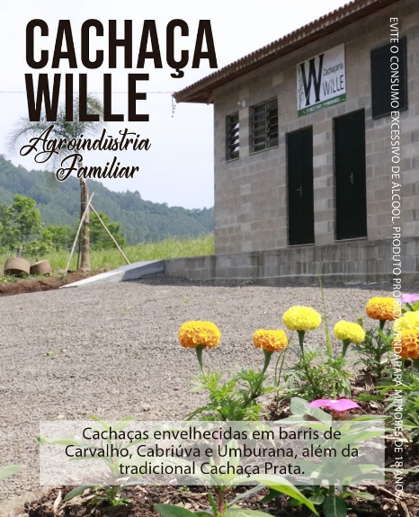
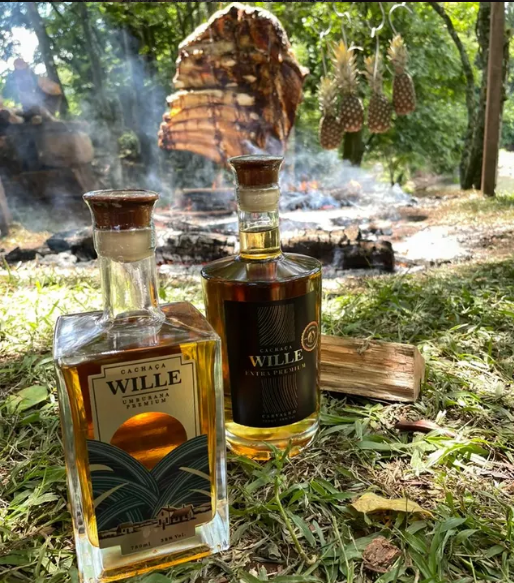

Onde tudo comeca
No coracao do Vale do Taquari, em Poco das Antas, a Cachacaria Wille preserva a arte da destilacao artesanal. Cada gota carrega a historia de uma terra generosa e o rigor de um processo que nao aceita atalhos.
"A alma da cana encontra a perfeicao da madeira."

Excelencia Reconhecida
Nossas cachacas sao submetidas aos mais rigorosos testes de paladar, conquistando admiradores e especialistas.
Selo Premium 2025
Certificacao de qualidade superior em processos de destilacao e envelhecimento.
Testes as Cegas
Destaque em avaliacoes sensoriais pela complexidade de aromas e suavidade.
5 Premiacoes
Reconhecimento em concursos regionais e nacionais de cachacas artesanais.

O Segredo Esta na Madeira
O envelhecimento e uma arte. Utilizamos 5 madeiras nobres para criar blends inesqueciveis.

Carvalho
Notas de baunilha e coco.
Amburana
Aroma adocicado e canela.
Balsamo
Toque herbaceo e especiarias.
Cabriuva
Frutado e floral intenso.
Grapia
Cor dourada e corpo macio.
Nossa Paixao em Video
A Paixao por Tras da Marca
Conheca o Alambique
O Que a Imprensa Diz
Pronto para viver essa experiencia?
Leve a tradicao de Poco das Antas para sua mesa.
Quero Comprar Agora Como Chegar